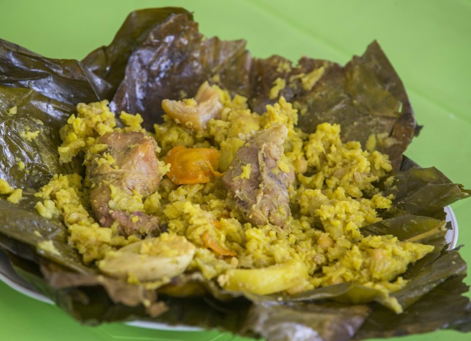

Tamal

Es una de las comidas típicas de Colombia que tiene ingredientes y formas de
preparación especiales que lo hacen representativo en la gastronomía. Se rellena con
carnes y verduras y se cocina en agua. Pero el secreto del sabor está en su
envoltura: hojas de plátano o de bijao, que le dan un sabor único y delicioso.
En todas las regiones puedes encontrar diferentes
tipos de tamales según sus costumbres, tradiciones e ingredientes locales.
- 500 gramos de hoja de plátano
- 1 carrete de hilo de cocina
- 500 gramos de harina de maíz precocida
- 3 piezas de zanahorias en rodaja
- 2 piezas de papa chica en rodajas
- 1 taza de arvejas
- 1 kilogramo de carne de pollo
- agua la suficiente
- sal al gusto
- comino en polvo al gusto
- 2 cucharadas soperas de achiote o color
- 6 piezas de cebolla larga
- 4 dientes de ajo pelados
- 3 jitomates
- 1 cebolla chica
- 5 hojas de laurel
Pasos
- marinar la carne de pollo
- coloca la carne de pollo y vierte la salsa licuada
- agrega el jitomate y la cebolla picada
- harina de maíz precocida, también agrega un poco de sal y dos tazas de agua tibia
- Limpia las hojas de plátano
- agrega una cucharada del guisado de tomate con cebolla y distribuye
- envolver
- gregar agua hasta un poco más de la mitad de la olla
- retira los tamales de la olla, corta el hilo de cocina y sirve
regresar